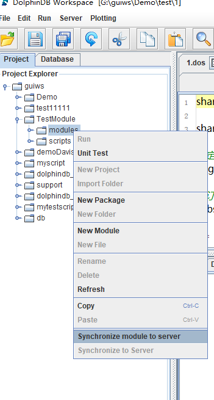

模块概述
在使用 DolphinDB 的脚本进行开发时，可以创建可复用模块，以封装自定义函数。模块可以将大量函数按目录树结构组织在不同模块中。既可以在系统初始化时预加载模块，也可以在需要使用的时候引入模块。
1. Module（模块）介绍
在 DolphinDB 中，模块是只包含函数定义的脚本文件。它具有以下特点：
- 模块文件默认保存在 [home]/modules 目录下。
- 模块文件名的后缀为 .dos（"DolphinScript"的缩写）或 .dom（"DolphinModule"的缩写）。
- 模块文件第一行只能使用 module 后接模块名以声明模块，即 module module_name。
- 模块文件除第一行外，仅可包含模块导入语句与函数定义。
2. 定义模块
2.1. 创建模块目录
所有的模块定义默认存放在 [home]/modules 目录下：
- [home] 目录由系统配置参数 home 决定，可以通过
getHomeDir函数查看。 - 节点的模块目录由配置参数 moduleDir 来指定，其默认值是相对路径 modules。系统会首先到节点的 home 目录寻找该目录，如果没有找到，会依次在节点的工作目录与可执行文件所在目录寻找。请注意，单节点模式下，这三个目录默认相同。
2.2. 创建模块文件
在 modules 目录下创建以 .dos 为后缀的模块文件，例如 fileLog.dos。模块文件的第一行必须是模块声明语句。例如在 fileLog.dos 中声明模块：
module fileLog其中 fileLog 是模块名，必须与模块文件（fileLog.dos）的名称一致。
模块文件除第一行外的内容仅可包含函数定义或模块导入语句（如需引用其它模块）。例如，fileLog 模块仅包括向指定日志文件写入日志的函数 appendLog：
module fileLog
def appendLog(filePath, logText){
f = file(filePath,"a+")
f.writeLine(string(now()) + " : " + logText)
f.close()
}在模块文件中，除函数定义、模块声明语句和模块导入语句外，其它代码将被忽略。
2.3. 序列化模块文件
使用 saveModule 函数可以将模块序列化成扩展名为 dom 的二进制文件。将模块序列化为 dom 文件能够增强代码的保密性和安全性。例如，序列化上一节中的 module fileLog：
saveModule("fileLog")dom 文件会保存至 dos 文件所在的目录。
注意：
如果 dos 文件的内容发生改变，需要重新执行
saveModule函数来生成新的 dom 文件。可将saveModule函数的 overwrite 参数设置为 true 来覆盖已有的 dom 文件。例如：saveModule("fileLog" , , true)如果当前模块引用了另一个模块的函数，则在序列化该模块中只会对其依赖模块的名称进行序列化，不会序列化依赖函数的定义。因此，在加载或移动 .dom 文件时，需同时加载或移动其依赖的模块文件。
3. 导入模块
3.1. 使用use关键字
使用 use 关键字来导入一个模块。如果导入的模块依赖了其他模块，系统会自动加载其他模块。
注意:
use关键字导入的模块是会话隔离的，仅对当前会话有效。- 自 2.00.12 版本起，use 关键字支持导入后缀为 .dos 的模块文件或 .dom 的二进制文件。
导入模块后，可以通过以下两种方式来使用模块内的自定义函数：
(1) 直接使用模块中的函数：
use fileLog
appendLog("mylog.txt", "test my log")(2) 指定模块中的函数的命名空间（即在 modules 目录下的完整路径）：
use fileLog
fileLog::appendLog("mylog.txt", "test my log")若导入的不同模块中含有相同名称的函数，则必须通过此种方式调用此类函数。
3.2. 将模块内函数加载为系统内置函数
注意：该功能在1.20.1及以上版本支持。
3.1节提到，use 关键字导入的模块是会话隔离的，这在实际使用中会带来一些不便。为了解决这一问题，DolphinDB 支持通过 loadModule 函数或者配置参数 preloadModules 将模块定义的函数加载为系统的内置函数，这样模块对所有会话都是可见的。
模块定义的函数成为内置函数之后，具有以下特点：
- 用户无法覆盖函数的定义。
- 如果在
remoteRun或rpc中使用了该函数，系统不会序列化该函数的定义到远程节点。因此远程节点也必须加载该模块，否则系统会抛出无法找到函数的异常。 - 该函数在系统内存中只有一份，且对所有会话可见。不仅节约了内存，还减少了每个会话加载模块的时间。另外，无需使用
use关键字导入模块，使得调用模块的代码更加简洁，API 调用模块函数更加方便。
可以通过 .dos 文件或 .dom 文件加载模块。系统会自动到 modules 目录寻找模块文件。如果目录中包含同名的 .dos 文件和 .dom 文件，系统只加载 .dom 文件。如果加载的是 .dom 文件，则用户无法查看模块内函数的定义。
如果加载的模块中引用了其他模块：
- 如果加载的是 .dos 文件，则系统在加载时会自动加载其依赖的模块。
- 如果加载的是 .dom 文件，则必须先加载该模块中所依赖的模块文件。
3.2.1. 通过 loadModule 函数加载
该函数只能在系统的初始化脚本（默认是dolphindb.dos）中使用，不能在命令行或者 GUI 中执行。例如，加载上文“创建模块文件”节中的模块 fileLog，在 dolphindb.dos 文件末尾加上：
loadModule("fileLog")通过此方法加载模块后，在调用模块函数时必须指定函数的命名空间（即在 modules 目录下的完整路径）：
fileLog::appendLog("mylog.txt", "test my log")3.2.2. 通过配置参数 preloadModules 加载
对单机版，该参数在 dolphindb.cfg 中配置。对集群版，需要为 controller 和 datanode 加载相同的模块。最简单的方法在 controller.cfg 和 cluster.cfg 中配置 preloadModules 参数。
例如：
preloadModules=fileLog如果需要加载多个模块，使用逗号分隔。模块函数加载方法同 loadModule。
3.2.3. 与函数视图（function view）的区别
通过 loadModule 或 preloadModules 生成的内置函数与 function view 对比，有以下区别：
- dom 模块的函数对所有人均不可见，包括系统管理员和 owner，保密性更高。function view 的定义对 admin 和 owner 以及授权用户可见。
- 所有模块都会有模块名称。function view 目前不支持域名限定。
- 序列化一个模块时，不会序列化依赖的函数，只会序列化依赖的模块名称。而 function view 序列化时，会序列化所有的依赖，以及依赖的依赖，实现 self-contained。
function view 和模块的应用场景有所不同。function view 一般用于跟数据库相关的数据访问。模块中的函数一般是通用的处理逻辑或算法。function view 可能会调用模块中的函数，但是模块中的函数一般不调用 function view。
4. 模块分类
4.1. 声明模块类别命名空间
如果需要对模块进行分类，可在 modules 目录下设置多个子目录，以作为不同模块类别的命名空间。例如，现有两个模块 fileLog 和 dateUtil，它们分别存放于 modules/system/log/fileLog.dos 与 modules/system/temperal/dateUtil.dos。这两个模块相应的声明语句分别为 module system::log::fileLog 与 module system::temperal::dateUtil。
4.2. 调用命名空间模块
在对模块进行序列化（saveModule）、通过 use 语句导入、以及通过 loadModule 函数或 preloadModules 配置参数加载时，均需指定完整路径。例如，导入上一节中的 fileLog 模块：
use system::log::fileLog可以通过以下两种方法调用模块函数：
- 直接调用其中函数：
appendLog("mylog.txt", "test my log")- 使用全路径调用其中函数：
system::log::fileLog::appendLog("mylog.txt", "test my log")5. GUI中远程调试模块
当 GUI 所在机器与 DolphinDB 服务器不是同一台机器时，在 GUI 中编辑的模块代码，需要先上传到远程服务器的 [home]/modules 目录，才能通过 use 语句调用模块。其中[home]表示DolphinDB 的主目录，通过配置项 home 指定。
DolphinDB GUI 从0.99.2版本开始提供了远程同步模块的功能，具体用法如下：
指定远程服务器路径：
添加远程服务器（Server->Add Server）时，指定
Remote Directory目录:若上步中未指定
Remote Directory，可通过 Server->Edit Server 进行添加：

点击下图
Synchronize to server将 modules 目录下的所有文件和子目录同步到步骤1设置的Remote Directory下。
假设 Remote Directory 设置为'[home]/modules'，本地需要同步的文件名是 "C:/users/usr1/Project/scripts/test.dos"。同步的时候，系统会在远端自动创建目录和相应文件 '[home]/modules/Project/scripts/test.dos'。
同步完成后，就可以在远程服务器上执行 use 语句导入模块。需要注意的是，在使用模块前，需要参考上文“创建模块目录”设置模块路径。
6. 注意事项
6.1. 同名函数定义规则
不同模块中可以定义相同名字的函数。如果使用全路径调用函数，可以通过模块命名空间来区分函数。
如果直接调用函数：
- 若只有一个已导入模块包含该函数，DolphinDB 会调用该模块的函数。
- 若多个已导入模块包含该函数，会抛出异常：
Modules [Module1] and [Module2] contain function [functionName]. Please use module name to qualify the function. - 若所有已导入的模块中均不包含该函数，DolphinDB 会在系统内置函数中搜索该函数。如果内置函数中也没有该函数，将抛出函数未定义的异常。
- 若已导入模块中某函数与某自定义函数重名，调用时需要通过命名空间来区分函数。自定义函数和内置函数的默认命名空间为根目录，用两个冒号表示。
下例中，首先创建自定义函数myfunc：
login("admin","123456")
def myfunc(){
return 1
}
addFunctionView(myfunc)然后定义模块sys，其中含有函数myfunc。
module sys
def myfunc(){
return 3
}若要调用模块sys中的函数myfunc，可在使用
use sys之后，使用：
sys::myfunc()或：
myfunc()若要使用模块外的自定义函数，可使用：
::myfunc()6.2. 刷新模块定义
通过 use 导入模块时，模块函数被加载到缓存中，后续调用函数时，都将从缓存中进行调用。若需要在测试过程中快速反复修改模块代码并刷新定义，可采用以下方法：
- 在模块文件修改后执行全部的模块代码。这种方法仅对当前会话有效。
- 调用命令 clearCachedModules，强制清除缓存的模块。当缓存清除后，执行 use 语句时，会重新从文件加载模块，无需重启节点。只有 admin 才有权限执行这个命令。
6.3. 模块间互相调用
- 模块之间可以单向引用，例如允许模块a引用b，b引用c。
- 模块之间不支持交叉引用，例如不允许模块a引用b，模块b又引用a。